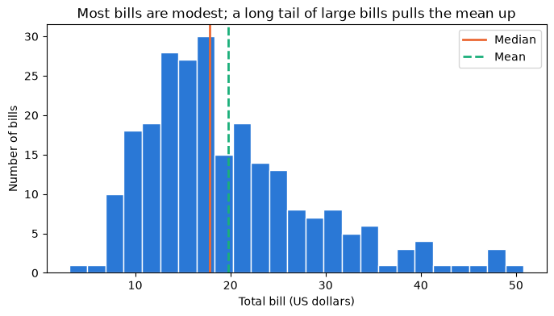
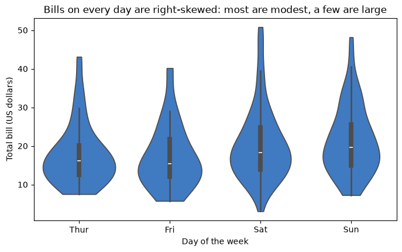
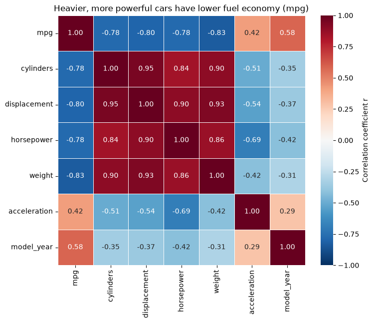
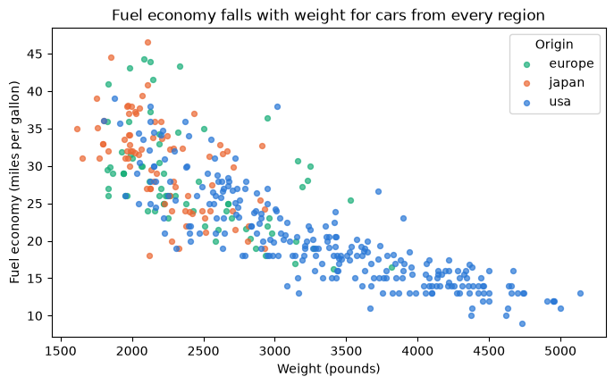
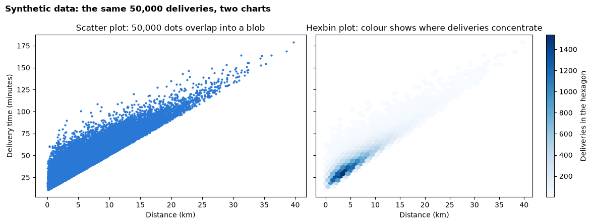

Day 1 lecture: Exploring data in Python¶
Before anyone trusts a number, an analyst explores the table it came from. This lecture teaches a repeatable exploration routine in pandas: check the structure and data quality, describe distributions and skew, summarise groups with pivot tables, measure relationships with correlation, look for hidden confounders, and draw charts that still work with tens of thousands of rows.
Open this notebook in JupyterLab from the course folder and run each cell from top to bottom with Shift + Enter.
What you will be able to do¶
- Inspect a new table's structure with
shape,info,dtypesandisnull, and list its data-quality problems. - Describe a numeric column with the right summary, and recognise a skewed distribution.
- Summarise one measure across two categories with
pd.pivot_tableandgroupby. - Compute a correlation matrix, draw it as a heatmap, and read the strength and direction of each relationship.
- Explain confounding and Simpson's paradox, and check a comparison by holding a third variable roughly constant.
- Choose a violin plot or a hexbin plot when a box plot or scatter plot hides the shape of the data.
Reading: Qlik, What is descriptive analytics?; Analytics Vidhya (2015), Ultimate guide for data exploration in Python.
How to use the questions in this notebook
Predict, then reveal boxes ask you to guess before running the next cell. Check your understanding boxes are short questions to answer in your own words, alone or with the person next to you.
| Part | Topic |
|---|---|
| 1 | The exploration routine |
| 2 | Structure and data quality |
| 3 | Distributions and skew |
| 4 | Pivot tables and groupby |
| 5 | Correlation and the heatmap |
| 6 | Confounding and Simpson's paradox |
| 7 | Charts for large datasets |
Recap: this morning¶
Answer from memory, then check with the person next to you.
- Which kind of analytics answers "why did it happen?"
- Anscombe's four datasets share their means, spreads and correlation. What should you always do before trusting summary numbers?
- A total can reverse the story told by every one of its parts. What is that trap called?
Part 1: The exploration routine¶
Exploratory data analysis (EDA) is the first look at a new dataset: what is in it, whether it can be trusted, and which patterns are worth a closer look. It is descriptive and diagnostic analytics in practice. Analysts follow roughly the same routine every time:
| Step | Question | pandas and charts |
|---|---|---|
| 1. Structure | How many rows and columns? What does one row mean? Which types? | shape, info(), dtypes, head() |
| 2. Data quality | What is missing, duplicated or impossible? | isnull().sum(), duplicated(), describe() (min and max) |
| 3. Distributions | What is typical? How spread out? Symmetric or skewed? | describe(), skew(), histogram, box or violin plot |
| 4. Groups | How does a measure differ between categories? | groupby, pd.pivot_table |
| 5. Relationships | Which numeric columns move together, and how strongly? | corr(), heatmap, scatter or hexbin plot |
| 6. Confounders | Could a third variable explain the difference? | Compare within groups of that variable |
We use two tables you have in the data folder, so everything runs without internet:
| Table | One row is | Used for |
|---|---|---|
mpg.csv |
One car model from 1970–1982 (fuel economy in miles per gallon, engine and weight) | Structure, quality, correlation, confounding |
tips.csv |
One restaurant bill, with the tip (US dollars) | Distributions, pivot tables |
The lab applies the same routine to a third table.
import matplotlib.pyplot as plt
import numpy as np
import pandas as pd
import seaborn as sns
cars = pd.read_csv("data/mpg.csv")
tips = pd.read_csv("data/tips.csv")
tips["tip_percent"] = 100 * tips["tip"] / tips["total_bill"]
print("cars:", cars.shape, "| tips:", tips.shape)
cars: (398, 9) | tips: (244, 8)
Part 2: Structure and data quality¶
Structure¶
shape gives (rows, columns). info() lists every column with its type and its count of non-null (recorded) values. Compare that count with the number of rows: a lower number means missing values.
cars.info()
<class 'pandas.core.frame.DataFrame'>
RangeIndex: 398 entries, 0 to 397
Data columns (total 9 columns):
# Column Non-Null Count Dtype
--- ------ -------------- -----
0 mpg 398 non-null float64
1 cylinders 398 non-null int64
2 displacement 398 non-null float64
3 horsepower 392 non-null float64
4 weight 398 non-null int64
5 acceleration 398 non-null float64
6 model_year 398 non-null int64
7 origin 398 non-null object
8 name 398 non-null object
dtypes: float64(4), int64(3), object(2)
memory usage: 28.1+ KB
Predict, then reveal
Read the
Non-Null Countcolumn in the output above. Which column has fewer values than there are rows? Then run the next cell, which counts the missing values directly.
print("Missing values per column:")
print(cars.isnull().sum())
Missing values per column:
mpg 0
cylinders 0
displacement 0
horsepower 6
weight 0
acceleration 0
model_year 0
origin 0
name 0
dtype: int64
isnull() marks each missing cell as True; .sum() counts the True values in each column. Let us look at the rows concerned rather than guess:
cars[cars["horsepower"].isnull()][["name", "model_year", "weight", "horsepower"]]
| name | model_year | weight | horsepower | |
|---|---|---|---|---|
| 32 | ford pinto | 71 | 2046 | NaN |
| 126 | ford maverick | 74 | 2875 | NaN |
| 330 | renault lecar deluxe | 80 | 1835 | NaN |
| 336 | ford mustang cobra | 80 | 2905 | NaN |
| 354 | renault 18i | 81 | 2320 | NaN |
| 374 | amc concord dl | 82 | 3035 | NaN |
A missing value is not available, not zero. Filling it with 0 would invent engines with no power and pull every average down. Common choices are:
| Choice | When it makes sense |
|---|---|
| Keep and note | Few rows are affected and pandas skips missing values in means and correlations anyway |
| Drop the rows for an analysis that needs the column | The rows are a small share and missing for no particular reason |
| Fill in (impute) with a typical value | Only with a stated reason, and never silently |
Here we keep the rows and note it: pandas ignores missing values when it computes a mean or a correlation.
Other quality checks¶
Missing values are only one problem. Check for duplicated rows and impossible values. describe() shows each column's minimum and maximum, which is the fastest way to spot a weight of zero or a year of 2099.
print("Fully duplicated rows:", cars.duplicated().sum())
cars.describe().round(1)
Fully duplicated rows: 0
| mpg | cylinders | displacement | horsepower | weight | acceleration | model_year | |
|---|---|---|---|---|---|---|---|
| count | 398.0 | 398.0 | 398.0 | 392.0 | 398.0 | 398.0 | 398.0 |
| mean | 23.5 | 5.5 | 193.4 | 104.5 | 2970.4 | 15.6 | 76.0 |
| std | 7.8 | 1.7 | 104.3 | 38.5 | 846.8 | 2.8 | 3.7 |
| min | 9.0 | 3.0 | 68.0 | 46.0 | 1613.0 | 8.0 | 70.0 |
| 25% | 17.5 | 4.0 | 104.2 | 75.0 | 2223.8 | 13.8 | 73.0 |
| 50% | 23.0 | 4.0 | 148.5 | 93.5 | 2803.5 | 15.5 | 76.0 |
| 75% | 29.0 | 8.0 | 262.0 | 126.0 | 3608.0 | 17.2 | 79.0 |
| max | 46.6 | 8.0 | 455.0 | 230.0 | 5140.0 | 24.8 | 82.0 |
Read the min and max rows in the output above. Are they plausible for cars of that era (fuel economy, weight in pounds, model year as two digits)?
Data-quality checklist
- Row count and grain: what does one row mean?
- Types: are numbers stored as numbers and categories as text?
- Missing values: how many, where, and why?
- Duplicates: genuine repeats or double entries?
- Impossible values: zeros, negatives or extremes that cannot be true?
- Write down what you found and what you did about it.
Check your understanding
A colleague replaces every missing
horsepowerwith 0 and reports the average horsepower. What goes wrong? What would you do instead?
Part 3: Distributions and skew¶
A distribution describes how the values of one column are spread out. Three questions describe it: what is typical (centre), how spread out it is, and what shape it has.
Predict, then reveal
Restaurant bills cannot be negative, and most are modest, but a few parties spend a lot. Will the mean bill be above, below or equal to the median bill? Write your guess, then run the next cell.
bill = tips["total_bill"]
print(f"Mean bill: {bill.mean():.2f} US dollars")
print(f"Median bill: {bill.median():.2f} US dollars")
print(f"Skewness: {bill.skew():.2f}")
Mean bill: 19.79 US dollars
Median bill: 17.80 US dollars
Skewness: 1.13
Skewness measures how lopsided a distribution is:
| Skewness | Shape | Mean compared with median | Typical business examples |
|---|---|---|---|
| Close to 0 | Roughly symmetric | About equal | Heights, measurement errors |
| Clearly positive (about 1 or more) | Right-skewed: a long tail of large values | Mean above the median | Bills, incomes, prices, order sizes |
| Clearly negative | Left-skewed: a long tail of small values | Mean below the median | Scores on an easy test |
With a right-skewed column, a few large values pull the mean up, so the median is the better "typical" value to report. The histogram shows the tail:
fig, ax = plt.subplots(figsize=(8, 4))
ax.hist(bill, bins=25, color="#2a78d6", edgecolor="white")
ax.axvline(bill.median(), color="#eb6834", linewidth=2, label="Median")
ax.axvline(bill.mean(), color="#1baf7a", linewidth=2, linestyle="--", label="Mean")
ax.set_title("Most bills are modest; a long tail of large bills pulls the mean up")
ax.set_xlabel("Total bill (US dollars)")
ax.set_ylabel("Number of bills")
ax.legend()
plt.show()

Comparing distributions across groups: the violin plot¶
A box plot summarises each group with five numbers. A violin plot draws the whole shape: the width at each height shows how many values lie there, like a histogram turned on its side and mirrored. The thin box inside marks the middle half and the median. cut=0 stops each violin at the smallest and largest real value, so it never suggests a negative bill. Violins are useful when a group has two peaks or a long tail, which a box plot hides.
day_order = ["Thur", "Fri", "Sat", "Sun"]
fig, ax = plt.subplots(figsize=(8, 4.5))
sns.violinplot(data=tips, x="day", y="total_bill", order=day_order, color="#2a78d6", cut=0, ax=ax)
ax.set_title("Bills on every day are right-skewed: most are modest, a few are large")
ax.set_xlabel("Day of the week")
ax.set_ylabel("Total bill (US dollars)")
plt.show()

Each violin is wide near the bottom (many modest bills) and has a thin neck reaching upwards (a few large bills): the right-skewed shape again, on every day.
Check your understanding
A manager reads that the average house price in a city is far above what most families paid. Using the words skew, mean and median, explain how both statements can be true. Which number should the report lead with?
Part 4: Pivot tables and groupby¶
Business questions often compare a measure across two categories at once: tip percentage by day and by time (lunch or dinner), sales by region and by product, price by quality and by grade. A pivot table puts one category in the rows, another in the columns, and a summary of the measure in each cell. It is the same idea as a pivot table in Excel.
pd.pivot_table needs four things:
| Argument | Meaning | Here |
|---|---|---|
values |
The measure to summarise | tip_percent |
index |
The category for the rows | day |
columns |
The category for the columns | time |
aggfunc |
The summary for each cell | "mean" |
tip_pivot = pd.pivot_table(
data=tips,
values="tip_percent",
index="day",
columns="time",
aggfunc="mean",
).reindex(day_order)
print("Average tip (% of the bill) by day and time")
tip_pivot.round(1)
Average tip (% of the bill) by day and time
| time | Dinner | Lunch |
|---|---|---|
| day | ||
| Thur | 16.0 | 16.1 |
| Fri | 15.9 | 18.9 |
| Sat | 15.3 | NaN |
| Sun | 16.7 | NaN |
.reindex(day_order) puts the rows in calendar order instead of alphabetical order.
Predict, then reveal
Some cells in the output above show
NaN. Is that a tip percentage of zero? Before reading on, guess what it means.
NaN means not available: there were no bills in that combination (the restaurant served no weekend lunches in this data). An empty cell is not a zero.
A pivot table of averages should always be read next to the counts behind each cell, because an average of three bills is far less reliable than an average of eighty:
count_pivot = pd.pivot_table(
data=tips, values="tip_percent", index="day", columns="time", aggfunc="count",
).reindex(day_order)
print("Number of bills behind each average")
count_pivot
Number of bills behind each average
| time | Dinner | Lunch |
|---|---|---|
| day | ||
| Thur | 1.0 | 61.0 |
| Fri | 12.0 | 7.0 |
| Sat | 87.0 | NaN |
| Sun | 76.0 | NaN |
The same summary with groupby¶
groupby with two columns gives the same numbers in a long table: one row per combination. Use whichever is easier to read. observed=True keeps only combinations that actually occur.
tips.groupby(["day", "time"], observed=True).agg(
bills=("tip_percent", "count"),
average_tip_percent=("tip_percent", "mean"),
).round(1)
| bills | average_tip_percent | ||
|---|---|---|---|
| day | time | ||
| Fri | Dinner | 12 | 15.9 |
| Lunch | 7 | 18.9 | |
| Sat | Dinner | 87 | 15.3 |
| Sun | Dinner | 76 | 16.7 |
| Thur | Dinner | 1 | 16.0 |
| Lunch | 61 | 16.1 |
Check your understanding
Write the
pd.pivot_tablecall that shows the median total bill withsexin the rows andsmokerin the columns. Which argument changes, and why might the median suit bills better than the mean?
Part 5: Correlation and the heatmap¶
The correlation coefficient r measures how closely two numeric columns follow a straight line:
| r | Reading |
|---|---|
| +1 | Perfect straight line going up |
| about +0.7 or more | Strong positive relationship |
| about 0 | No straight-line relationship (there may still be a curve) |
| about −0.7 or less | Strong negative relationship |
| −1 | Perfect straight line going down |
corr() computes r for every pair of numeric columns at once: a correlation matrix. select_dtypes(include="number") keeps only the numeric columns, because a correlation needs numbers.
numeric_cars = cars.select_dtypes(include="number")
corr_matrix = numeric_cars.corr()
corr_matrix.round(2)
| mpg | cylinders | displacement | horsepower | weight | acceleration | model_year | |
|---|---|---|---|---|---|---|---|
| mpg | 1.00 | -0.78 | -0.80 | -0.78 | -0.83 | 0.42 | 0.58 |
| cylinders | -0.78 | 1.00 | 0.95 | 0.84 | 0.90 | -0.51 | -0.35 |
| displacement | -0.80 | 0.95 | 1.00 | 0.90 | 0.93 | -0.54 | -0.37 |
| horsepower | -0.78 | 0.84 | 0.90 | 1.00 | 0.86 | -0.69 | -0.42 |
| weight | -0.83 | 0.90 | 0.93 | 0.86 | 1.00 | -0.42 | -0.31 |
| acceleration | 0.42 | -0.51 | -0.54 | -0.69 | -0.42 | 1.00 | 0.29 |
| model_year | 0.58 | -0.35 | -0.37 | -0.42 | -0.31 | 0.29 | 1.00 |
A table of 49 numbers is hard to scan. A heatmap colours each cell by its value, with a diverging colour scale fixed from −1 to +1 so that colour means the same thing in every heatmap: one colour for positive, another for negative, pale near zero. annot=True prints the value in each cell.
fig, ax = plt.subplots(figsize=(8, 6.5))
sns.heatmap(
corr_matrix, annot=True, fmt=".2f", cmap="RdBu_r",
vmin=-1, vmax=1, linewidths=0.5, ax=ax,
cbar_kws={"label": "Correlation coefficient r"},
)
ax.set_title("Heavier, more powerful cars have lower fuel economy (mpg)")
plt.show()

Read the mpg row of the heatmap above: which column has the strongest relationship with fuel economy, and in which direction? Notice also the dark block of engine columns (cylinders, displacement, horsepower, weight) that are strongly correlated with each other: they largely measure the same thing, the size of the car.
Three warnings about correlation
- Straight lines only. A strong curve can have r near 0 (remember Anscombe's set II). Plot before you conclude.
- Association is not causation. Two columns can move together because a third drives both.
- The diagonal is always 1. Every column correlates perfectly with itself; ignore it.
Check your understanding
The correlation between
model_yearandmpgis positive. Does that prove that newer car designs caused better fuel economy? Name one other column that could be part of the explanation.
Part 6: Confounding and Simpson's paradox¶
A comparison that misleads¶
A confounder is a third variable that is related to both things you compare, and so distorts the comparison. Let us compare fuel economy of cars from the three regions of origin in the data.
cars.groupby("origin").agg(
cars=("mpg", "count"),
average_mpg=("mpg", "mean"),
average_weight_lb=("weight", "mean"),
).round(1)
| cars | average_mpg | average_weight_lb | |
|---|---|---|---|
| origin | |||
| europe | 70 | 27.9 | 2423.3 |
| japan | 79 | 30.5 | 2221.2 |
| usa | 249 | 20.1 | 3361.9 |
Predict, then reveal
The output above shows a large gap in average fuel economy between regions. Look also at the weight column. Is the gap mostly about where the car was built, or about something else? Write your answer, then run the next cell.
To check, we hold the suspected confounder roughly constant: cut weight into bands with pd.cut, then compare regions within each band.
cars["weight_band"] = pd.cut(
cars["weight"],
bins=[0, 2500, 3000, 3500, 6000],
labels=["under 2,500 lb", "2,500-3,000 lb", "3,000-3,500 lb", "over 3,500 lb"],
)
within_band = pd.pivot_table(
data=cars, values="mpg", index="origin", columns="weight_band",
aggfunc="mean", observed=True,
)
print("Average mpg by origin, within weight bands (NaN = no cars of that origin and weight)")
within_band.round(1)
Average mpg by origin, within weight bands (NaN = no cars of that origin and weight)
| weight_band | under 2,500 lb | 2,500-3,000 lb | 3,000-3,500 lb | over 3,500 lb |
|---|---|---|---|---|
| origin | ||||
| europe | 30.7 | 22.8 | 23.5 | 21.0 |
| japan | 31.7 | 26.0 | NaN | NaN |
| usa | 29.0 | 24.3 | 19.4 | 15.1 |
Compare the overall gap from the previous output with the gap inside each weight band above. Within a band, cars of similar weight from different regions are much closer than the overall averages suggested. A large part of the overall gap comes from the mix: one region's cars are mostly heavy, the others' mostly light. Weight is a confounder: it is related to origin and it drives fuel economy.
The chart shows the mix directly:
origin_colours = {"europe": "#1baf7a", "japan": "#eb6834", "usa": "#2a78d6"}
fig, ax = plt.subplots(figsize=(8, 4.5))
for origin, group in cars.groupby("origin"):
ax.scatter(group["weight"], group["mpg"], s=18, alpha=0.7,
color=origin_colours[origin], label=origin)
ax.set_title("Fuel economy falls with weight for cars from every region")
ax.set_xlabel("Weight (pounds)")
ax.set_ylabel("Fuel economy (miles per gallon)")
ax.legend(title="Origin")
plt.show()

Simpson's paradox: when the total reverses every part¶
Sometimes a confounder does not just shrink a gap; it reverses it. A well-known medical study (Charig and colleagues, 1986) compared two treatments for kidney stones. The counts below are from that study.
stones = pd.DataFrame({
"treatment": ["A", "A", "B", "B"],
"stone_size": ["small", "large", "small", "large"],
"patients": [87, 263, 270, 80],
"successes": [81, 192, 234, 55],
})
by_size = stones.assign(success_rate=100 * stones["successes"] / stones["patients"])
print("Success rate (%) within each stone size")
print(by_size.pivot_table(values="success_rate", index="treatment", columns="stone_size").round(1))
overall = stones.groupby("treatment")[["patients", "successes"]].sum()
overall["success_rate"] = 100 * overall["successes"] / overall["patients"]
print()
print("Success rate (%) overall")
print(overall.round(1))
Success rate (%) within each stone size
stone_size large small
treatment
A 73.0 93.1
B 68.8 86.7
Success rate (%) overall
patients successes success_rate
treatment
A 350 273 78.0
B 350 289 82.6
Predict, then reveal
Before reading on: in the output above, which treatment wins for small stones? For large stones? And overall?
Treatment A has the higher success rate for small stones and for large stones, yet B looks better overall. The reason is the mix: doctors gave A mostly to large, difficult stones and B mostly to small, easy ones. Stone size affects both the treatment chosen and the chance of success, so it is a confounder, and adding the groups together reverses the story. This reversal is Simpson's paradox.
How to protect yourself
When a comparison between groups surprises you, ask: what else differs between these groups? Then compare within levels of that variable (bands, as above), or compare a ratio that removes it (for example fuel used per pound, or price per unit of size). You will meet a confounder in the lab.
Check your understanding
A hospital's overall death rate is higher than a nearby clinic's. Name a likely confounder, and say how you would check whether the hospital is really worse.
Part 7: Charts for large datasets¶
With a few hundred rows a scatter plot works well. With tens of thousands, the dots pile on top of each other (overplotting): a solid blob hides where most of the data actually is.
To show this, the next cell creates synthetic (made-up) data for 50,000 deliveries: the distance in kilometres and the delivery time in minutes. The random generator is seeded, so everyone gets the same numbers.
rng = np.random.default_rng(300)
n = 50_000
distance_km = rng.gamma(shape=2.0, scale=3.0, size=n)
delivery_min = 10 + 4 * distance_km + rng.gamma(shape=2.0, scale=5.0, size=n)
deliveries = pd.DataFrame({"distance_km": distance_km, "delivery_min": delivery_min})
print("Synthetic deliveries:", deliveries.shape)
deliveries.describe().round(1)
Synthetic deliveries: (50000, 2)
| distance_km | delivery_min | |
|---|---|---|
| count | 50000.0 | 50000.0 |
| mean | 6.0 | 44.0 |
| std | 4.2 | 18.3 |
| min | 0.0 | 10.8 |
| 25% | 2.9 | 30.6 |
| 50% | 5.0 | 40.6 |
| 75% | 8.1 | 53.7 |
| max | 39.7 | 179.0 |
Predict, then reveal
In a plain scatter plot of 50,000 deliveries, will you be able to see where most deliveries lie? Run the next cell and compare the two panels.
fig, (left, right) = plt.subplots(1, 2, figsize=(12, 4.5), sharex=True, sharey=True)
left.scatter(deliveries["distance_km"], deliveries["delivery_min"], s=4, color="#2a78d6")
left.set_title("Scatter plot: 50,000 dots overlap into a blob")
hb = right.hexbin(deliveries["distance_km"], deliveries["delivery_min"],
gridsize=40, cmap="Blues", mincnt=1)
fig.colorbar(hb, ax=right, label="Deliveries in the hexagon")
right.set_title("Hexbin plot: colour shows where deliveries concentrate")
for ax in (left, right):
ax.set_xlabel("Distance (km)")
left.set_ylabel("Delivery time (minutes)")
fig.suptitle("Synthetic data: the same 50,000 deliveries, two charts", x=0.01, ha="left", fontweight="bold")
fig.tight_layout()
plt.show()

A hexbin plot divides the chart into hexagons and colours each one by how many points fall inside it, like a two-dimensional histogram. The darkest hexagons show where the data is densest: here, short deliveries of modest duration. gridsize sets how many hexagons fit across; mincnt=1 leaves empty hexagons blank.
| Chart | Best for | Weakness |
|---|---|---|
| Scatter plot | Up to a few thousand rows; individual outliers | Overplotting with many rows |
| Hexbin plot | Two numeric columns with many rows | Hides individual points |
| Box plot | Comparing centre and spread across groups | Hides the shape (two peaks, gaps) |
| Violin plot | Comparing the full shape across groups | Harder for a non-technical audience to read |
Check your understanding
In the hexbin plot, where is the densest region, roughly (a distance range and a time range)? How would you describe it to an operations manager in one sentence?
Summary¶
- Explore before you analyse: structure → quality → distributions → groups → relationships → confounders.
info()andisnull().sum()find missing values; a missing value is not available, never zero. Check duplicates and impossible values withduplicated()and the min and max indescribe().- Prices, bills and incomes are usually right-skewed: the mean sits above the median, so report the median as the typical value.
pd.pivot_table(values=, index=, columns=, aggfunc=)compares a measure across two categories; always read the counts behind each average.corr()and a heatmap show straight-line relationships from −1 to +1; correlation is not causation.- A confounder can shrink, inflate or reverse a comparison (Simpson's paradox). Compare within bands of the suspected confounder.
- With many rows, use a hexbin plot instead of a scatter plot, and a violin plot to see the full shape of each group.
Quick reference¶
| You want to… | Code |
|---|---|
| Columns, types and non-null counts | df.info() |
| Missing values per column | df.isnull().sum() |
| Duplicated rows | df.duplicated().sum() |
| Skewness of a column | df["col"].skew() |
| Pivot table | pd.pivot_table(data=df, values="y", index="a", columns="b", aggfunc="mean") |
| Correlation matrix | df.select_dtypes(include="number").corr() |
| Heatmap | sns.heatmap(corr, annot=True, fmt=".2f", cmap="RdBu_r", vmin=-1, vmax=1) |
| Bands of a number | pd.cut(df["col"], bins=[...]) |
| Violin plot | sns.violinplot(data=df, x="group", y="value") |
| Hexbin plot | plt.hexbin(df["x"], df["y"], gridsize=40, cmap="Blues", mincnt=1) |
Quiz: ready for the lab?¶
- Which two pandas calls tell you whether a table has missing values, and how?
- A column of prices has a mean of 4,000 and a median of 2,400. What shape is its distribution, and which number would you report as the typical price?
- Write the
pd.pivot_tablecall that shows the averagepricewithcutin the rows andcolorin the columns of a table calleddiamonds. - In a correlation heatmap, one column has r = 0.92 with price and another r = −0.01. Describe each relationship in words.
- A cheaper product grade sells for a higher average price than a better grade. Suggest one reason based on confounding, and one way to check it.
- Why would you draw a hexbin plot instead of a scatter plot for 50,000 rows, and what does the darkest hexagon tell you?
In the lab¶
Applied Lab 1: Data exploration (3%) applies this routine to more than 50,000 diamonds for a jewellery retailer: structural inspection, a pivot table of price, a correlation heatmap, a violin plot and a hexbin plot, then six questions in your own words.